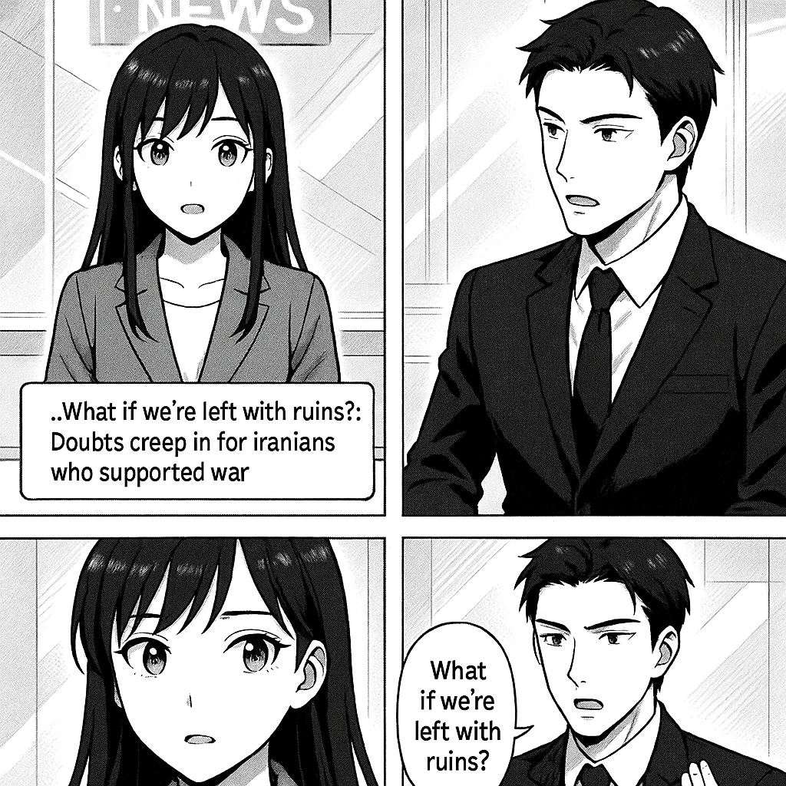

はい、ミライです！今日のニュースをわかりやすくお伝えしますね。 イランという国で、かつて戦争を支持していた人たちが、今はとても心配しているという話です。イランでは先生やエンジニア、お店の人たちが、戦争のせいで国がバラバラになったり、混乱したりするのではないかと不安に思っています。 「もし戦争のせいで国がこわれたらどうしよう？」という気持ちが広がっているんです。みんな、平和で安全な暮らしを望んでいて、争いが続くことにとても怖さを感じています。 つまり、イランの人たちは、戦争の影響で生活や国の未来がどうなるのか心配している、というニュースでした。 わかりやすかったでしょうか？他にも気になることがあったら教えてくださいね！

国際情勢アナリストのソウマです。 このニュースは、イラン内部で戦争への支持が揺らぎ始めている状況を示しています。かつて多くのイラン国民が愛国心や政権支持のもと戦争に賛同していましたが、長引く紛争や経済制裁、生活の困窮から「もし結果が廃墟だけならどうするのか」という不安や疑念が広がっています。これにより、体制の内部結束に亀裂が入り、今後の政局や地域安全保障に大きな影響を及ぼす可能性があります。
トップへ戻る